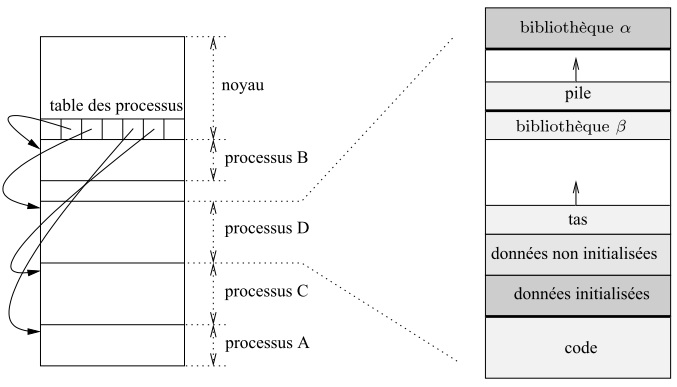
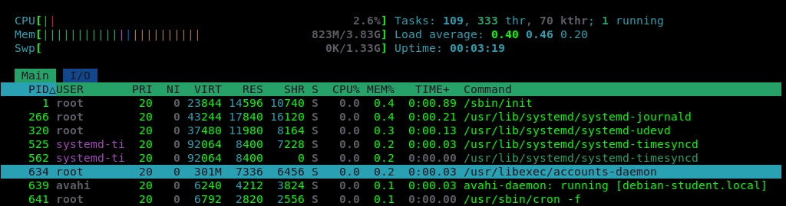
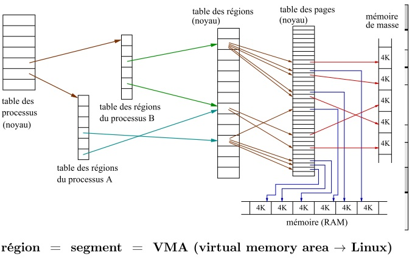
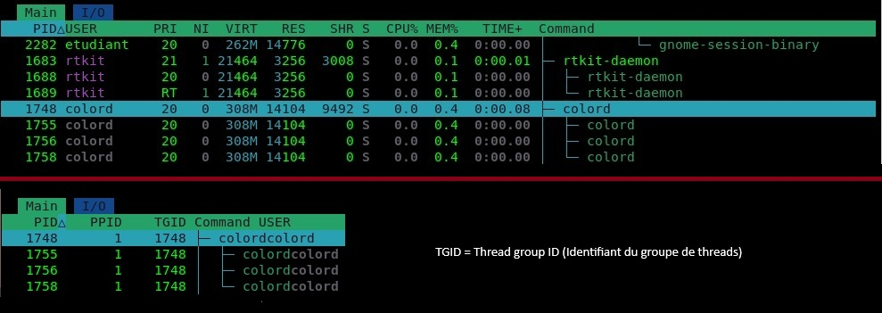

Définition d'un OS
- Programme assurant la gestion de l'ordinateur et de ses périphériques
- Ensemble central de programmes qui sert d'interface entre le matériel d'un ordinateur et les logiciels applicatifs
Le SE doit permettre
- L'intéraction avec des utilisateurs et l'exécution de leurs ordres dans la limite de leurs privilèges
- La protection de l'information: contre lecture/écriture non autorisée (confidentialité des données)
- La protection du matériel
- Postulat : L'accès aux ressources et à l'information doit s'effectuer sous un contrôle strict du système
Structure d'un ordinateur
- CPU : Central Processing Unit : exécute les instructions. Cycle très haute vitesse appelé Fetch-Decode-Execute (Chercher - Décoder - Exécuter)
- Chipset : chef d'orchestre (jeu de puces) de la carte mère. Ensemble de circuits intégrés dont le rôle est de coordonner et gérer les échanges de données entre la CPU et les autres composants de l'ordinateur (RAM, carte graphique, DD, USB, etc..)
- Northbridge : n'existe plus. Gérait les composants ultra-rapides comme la RAM et la carte graphique
- Southbridge : renommé aujourd'hui. Chipset qui gère les E/S lentes de la carte mère
- DDR2 : DDR2 SDRAM - Double data rate synchronous dynamic random access memory
- DMI : Direct media interface, pont entre le Northbridge et le Southbridge
- PCIe : Peripheral component interconnect express
- EFI Boot ROM : puce de mémoire flash contenant le micrologiciel/BIOS de la machine
- SPI : Serial peripheral interface. Lien entre le Southbridge et la puce EFI Boot ROM
- EFI : Extensible firmware interface. Programme de démarrage de la machine. Remplace le BIOS depuis 2020.
- HDD : Hard Disk Drive. Il utilisait le port parallèle ATA pour communiquer avec le Southbridge. Vitesse : 100 Mo/s
- SSD : Solid State Drive. Grosse clé USB. Stocke sur des puces de mémoire flash. Vitesse : 550 Mo/s à 7 000 Mo/s
- ATA : Advanced technology attachment. Remplacé par SATA (serial ATA).

Schéma simplifié d'un ordinateur (architecture Von Neumann)

Les composants
- Microprocesseur (CPU) : C'est le cerveau. Il exécute les instructions des programmes et orchestre tout le système. Effectue les calculs et dirige les transferts d'information (données, instruction)
- Mémoire : Mémoire vive RAM -> Random access (accès aléatoire) signifie que le CPU peut accéder à n'importe quelle partie de la zone mémoire directement et en un temps unique, contrairement au DD où l'accès est séquentiel, il faut dérouler un plateau. C'est la planche de travail de la CPU : Elle stocke les données et les programmes en cours d'exécution pour que le CPU y accède rapidement.
- Entrée/Sortie : L'interface avec le monde extérieur (clavier, souris, écran, disque dur) pour recevoir ou envoyer des données.
Les 3 types de bus
- Bus de données : Transporte le contenu réel (les bits d'un fichier, une variable de code, une image) entre les trois blocs.
- Bus d'adresse : Indique où envoyer ou récupérer l'information (ex: "Je veux lire la case mémoire n°1024").
- Bus de commande : Transmet les ordres de contrôle et de synchronisation (ex: "C'est une opération de Lecture" ou "C'est une opération d'Écriture").
Notions fondamentales
- Processus : exécution d'un programme
- Ressource : toute entité nécessaire à la progression d'un processus
Types de ressources
- Matérielle : L'UC, RAM, périphérique, disque dur
- Logicielle : Les données, le code (les instructions), fichiers, sémaphore, socket réseau...
Types d'accès aux ressources: partagé ou exclusif
Par exemple si deux processus envoient des données à l'imprimante en même temps, les caractères seront mélangés. La notion d'exclusivité est nécessaire ici.
Temps partagé
Le temps partagé (time-sharing) est une technique de l'OS pour donner l'illusion du parallélisme (appelé pseudo-parallélisme) sur un seul cœur de processeur.
- Le principe : Le processeur n'exécute pas les processus en même temps, mais les uns après les autres à toute vitesse.
- Le Quantum de temps : L'OS attribue à chaque processus un temps de parole très court (quelques millisecondes), appelé quantum.
- La rotation (Commutation de contexte) : Dès que le temps d'un processus est écoulé, l'OS le suspend, sauvegarde son état, et passe au processus suivant.
Architecture (simplifiée) d'un OS
L'architecture d'un système d'exploitation est structurée en couches indépendantes. Plus on monte, plus on est proche de l'utilisateur. Plus on descend, plus on se rapproche du matériel.
Les différentes couches (de haut en bas) --> L'OS s'étend sur les 3 couches intermédiaires

- Applications & Interfaces : Programmes de niveau utilisateur (compilateurs, navigateur, éditeur de texte). L'interaction se fait via une Interface graphique (GUI) (système de multifenêtrage) ou une CLI (Command-line interface) constituée d'un interpréteur de commandes (shell).
- Bibliothèques : Regroupent des fonctions/procédures ou variables prédéfinies compilées selon une thématique commune (ex : bibliothèque des fonctions mathématiques) pour faciliter le développement.
- API (Application Programming Interface) : Point de contact qui gère les appels système ou les primitives système pour faire le pont de manière sécurisée avec le noyau.
- Noyau (Kernel ou "système") : C'est le cœur du SE et le sujet principal du cours. Il coordonne les processus et gère l'allocation des ressources.
- Système de fichiers & Pilotes :
- Système de fichiers : Une présentation logique de l'information enregistrée sous forme de fichiers situés sur les périphériques matériels.
- Pilotes (Drivers) : Traducteurs matériels pouvant faire partie du noyau de façon statique (édition des liens) ou dynamique (chargement sous forme de modules).
- Matériel (Hardware) : Les composants physiques (processeur, mémoire, périphériques).
Types de noyaux selon leur organisation
| Type de noyau | Description | Avantages | Inconvénients | Exemples concrets |
|---|---|---|---|---|
| Monolithique | Un seul bloc exécutable généré à la compilation. Tout est soudé ensemble. | Simplicité, rapidité d'exécution, forte protection. | Nécessité d'inclure les pilotes ⇒ taille importante, mises à jour peu aisées, stabilité délicate, faille de sécurité ⇒ tout est menacé. | Anciens systèmes (MS-DOS) |
| Modulaire | Un bloc principal de base + des extensions (modules/pilotes) chargés dynamiquement à la demande. | Simplicité, rapidité d'exécution, forte protection, plus de flexibilité matérielle. | Stabilité délicate (si un module planté s'exécute au niveau du cœur). | Linux Debian, Android (basé sur le noyau Linux) |
| μ-noyau (Micro-noyau) | Le noyau est réduit au strict minimum. Le maximum de fonctionnalités (pilotes, fichiers) est déporté au niveau utilisateur en petits blocs indépendants. | Facilité de développement, de maintenance, stabilité, faille de sécurité ≠ tout est menacé. | Goulot d'étranglement au niveau des communications internes, sécurité mal maîtrisée. | MINIX, GNU Hurd, QNX |
| Exo-noyau | Tout ou presque est déporté au niveau utilisateur. Le noyau gère juste l'accès sécurisé aux ressources sans imposer d'abstraction. | Bonne performance (les applications accèdent directement au matériel). | Sécurité difficile à garantir. | Systèmes de recherche (ExOS) |
| Hybride | Structure intermédiaire : garde l'organisation découpée du micro-noyau, mais réintègre certaines fonctions critiques au niveau du noyau pour la vitesse. | MAX d'avantages (vitesse et modularité). | MIN d'inconvénients. | Windows 11 (noyau NT), macOS (noyau XNU) |
Les processus
Un processus = une exécution d’un programme
- Chaque processus est créé par un autre processus (père ⇒ fils).
- Chaque processus possède son espace d’adressage constitué de plusieurs régions.
- Une tentative d’accès hors de cet espace provoque une interruption.
- Chaque région est découpée en pages de taille fixe.
Régions typiques d’un processus Linux
- .text : Contient les instructions en langage machine
- .data : Données initialisées
- BSS : Données non initialisées (block started by symbol)
- Stack : Pile d’exécution. Zone mémoire dynamique. Contient les variables locales (temporaires), les paramètre d'entrée de fonction. Quand une fonction est terminée (return), toutes les données sont supprimées.
- Heap : « tas » (pile d’allocation dynamique de la mémoire)
- Les régions associées aux diverses bibliothèques utilisées
- Les droits d’accès du processus à ses régions sont r-x ou rw- ou r-- suivi d’un 4ème caractère :
- s : shared (partagé)
- p : private (privé)
Commande pour lister les régions du processus numéro n (où n est le PID du processus) : less /proc/n/maps
8. Table des processus
La table des processus est stockée de manière invisible en RAM dans l'espace noyau, mais l'OS' expose son contenu de manière transparente à travers le répertoire virtuel /proc et les commandes comme ps ou htop

Concepts clés
- Espace Noyau : Réservé au système d'exploitation, il contient la table des processus. Chaque entrée de cette table pointe vers un processus chargé en mémoire.
- Espace Utilisateur : Zone isolée allouée à chaque processus (Processus A, B, C, D) contenant son propre espace d'adressage virtuel.
- Zoom structurel : On y retrouve l'organisation classique vue en TP : le code tout en bas, suivi des données, du tas qui grandit vers le haut, et de la pile qui redescend depuis les adresses hautes.

9. Régions des processus

Explications
Une table : est un tableau, une structure de données en mémoire composée de plusieurs cases alignées, toutes de même structure
La table des processus : est un grand tableau géré par le noyau. Chaque case représente un processus actif du système, et contient la structure d'identité du processus (le PCB ou task_struct), qui inclut notamment le pointeur vers sa région. La table des processus ne contient pas l'ensemble des régions du processus, mais des pointeurs faisant référence à ces régions.
La table des régions du processus X : contient l'ensemble des régions du processus (.text, .data, voir lien "maps"). Ses adresses mémoire son virtuelles
La table des régions (noyau) : Dans un espace de la RAM, l'ensemble des régions des processus est organisée dans la table des régions. Si 50 processus utilisent la même bibliothèque, celle-ci ne va pas être chargée 50 fois. Cette bibliothèque va être partagée entre les processus.
Région = Segment = VMA (Virtual Memory Area → Linux)
- Région : Terme conceptuel et pédagogique utilisé en cours pour désigner un bloc homogène de mémoire virtuelle (ex: Pile, Tas).
- Segment : Terme matériel (hardware) lié à l'architecture des processeurs qui sépare physiquement le code des données.
- VMA (Virtual Memory Area) : Terme technique officiel du noyau Linux; c'est la structure en C (`vm_area_struct`) qui représente chaque ligne affichée par la commande `maps`.
Le mécanisme de traduction de la mémoire
- Niveau Logique (Le Processus) : La table d'un processus pointe vers sa propre table des régions (ses blocs de mémoire virtuels).
- Niveau Système (Le Noyau) : La table globale des régions du noyau permet de centraliser la mémoire. C'est grâce à elle que deux processus différents peuvent partager une même bibliothèque en RAM (liaison dynamique).
- Niveau Matériel (La Table des Pages) : Chaque région est découpée en blocs de taille fixe de 4 Ko (les pages). La table des pages fait l'aiguillage final :
- Vers la RAM (Mémoire vive) si les données doivent être lues/écrites immédiatement par le CPU.
- Vers la Mémoire de masse (Disque / Swap) si la page n'est pas chargée ou a été déplacée sur le disque.
10. Les threads
Introduction : Qu'est-ce qu'un thread ?
En anglais, le mot "thread" signifie littéralement "un fil" (de discussion ou à coudre). En informatique, on parle de fil d'exécution.
Concrètement, un thread sert à exécuter plusieurs tâches simultanément au sein d'un même programme. Ses principaux objectifs sont :
- La réactivité : Éviter qu'une application ne se bloque (ne "freeze") pendant un long traitement (ex: télécharger un fichier en tâche de fond tout en gardant l'interface graphique fluide).
- La performance : Exploiter la puissance des processeurs multi-cœurs en répartissant les calculs sur plusieurs cœurs en même temps.
- La légèreté : Économiser la mémoire vive (RAM) en évitant de dupliquer un processus entier. Contrairement aux processus, les threads partagent le même espace mémoire, ce qui les rend ultra-rapides à créer et à détruire.
Propriétés fondamentales
- Définition : Un thread (ou "processus léger") est une unité d'exécution créée à l'intérieur d'un processus.
- Indépendance : Chaque thread possède sa propre pile d'exécution exclusive.
- Partage : Par défaut, toutes les autres régions du processus (Code, Tas, Données) sont partagées entre tous ses threads.
- Cas par défaut : Si aucun thread n'est explicitement créé, le processus comporte un seul thread unique qui se confond avec le processus lui-même.
- Exécution : Les threads s'exécutent de façon pseudo-parallèle (ou en parallèle réel sur une architecture multiprocesseur).
Vocabulaire Linux : Le terme tâche (task) désigne indistinctement un processus ou un thread au sein du noyau.

Sur Linux, tout est tâche. Donc PID c'est un processus ou un thread. Ce sont des tâches.
Mais si on regarde TGIP, on voit que les thread appartiennent tous au processus parent, 1748.
Commandes utiles en TP - ls /proc/n/task - htop